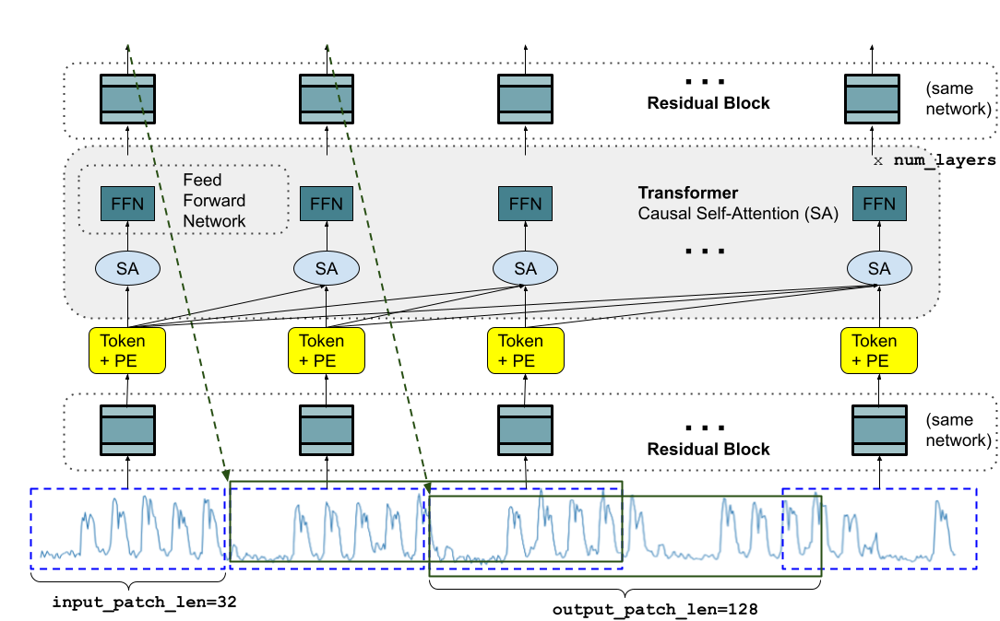
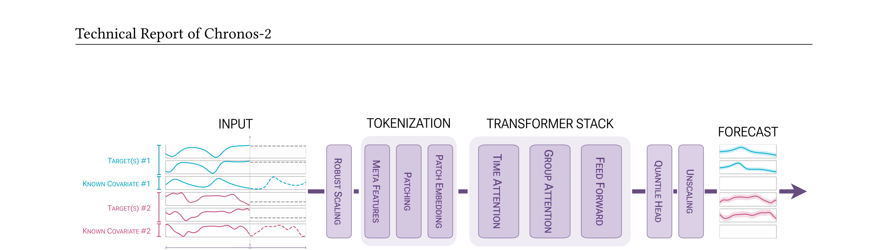
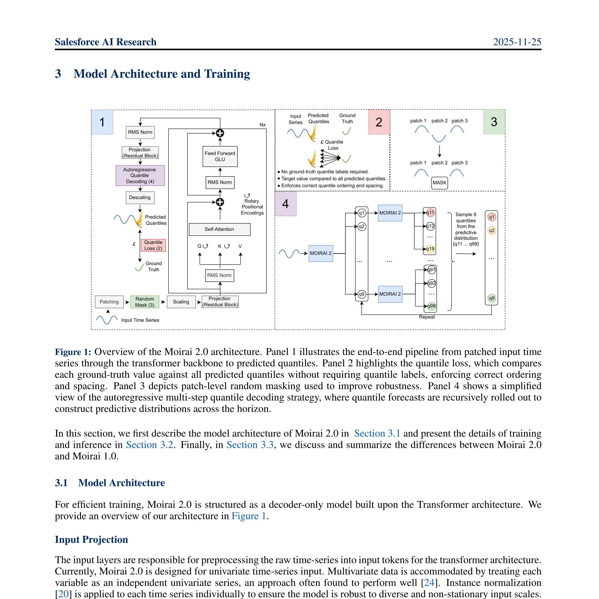

1. TimesFM (Times Foundation Model)
Google
2024
核心贡献：证明仅用时序数据（而非LLM）训练的 decoder-only 模型可以达到优秀的零样本性能。
关键特点
- 架构：Decoder-Only Transformer
- 核心设计：
- Patching：将序列切分为非重叠 patch（输入 32，输出 128）
- 输出 patch 更长：减少自回归步数，提升长序列预测效率
- 随机掩码：训练时随机 mask 部分 patch，使模型适应任意上下文长度
- 训练数据：1000 亿时间点，来源包括 Google Trends、Wiki Pageviews、合成数据
- 损失函数：MSE（点预测）

性能表现
- Monash 基准（18 个数据集）：零样本性能与有监督的 N-BEATS 相当
- ETT 数据集：与 PatchTST 相当，优于其他长序列模型
局限
2. Chronos-2
AWS
2025
核心贡献：从单变量预测扩展到通用预测，支持单变量、多变量、协变量辅助预测。
关键特点
- 架构：Encoder-Only Transformer（类似 T5）
- 核心创新：
- Group Attention：在批次内按组 ID 聚合信息，实现上下文学习（ICL）
- 组可以是：单序列、多元变量、目标+协变量
- 时间注意力 + 群组注意力交替使用
- 数据处理：
- 使用
sinh⁻¹ 变换进行鲁棒缩放
- 添加时间索引和 mask 作为元特征
- 输出 21 个分位数（含 0.01 和 0.99 极端分位数）
- 训练策略：两阶段训练（上下文 2048 → 8192）

性能表现
- fev-bench（100 个任务）：胜率 90.7%，技能分数 47.3%，显著优于所有基线
- 协变量任务上提升最大
- 能源和零售领域案例研究表现优异
局限
3. Moirai 2.0
Salesforce
2025
核心贡献：从 Moirai 1.0 的 masked-encoder 重构为decoder-only架构，实现"少即是多"。
关键特点
- 架构：Decoder-Only Transformer
- 核心设计变更（相比 1.0）：
- 从 masked-encoder 改为 decoder-only → 数据利用效率更高
- 多 patch 尺寸 → 单 patch 尺寸 → 简化实现、提升性能
- 混合分布输出 → 分位数损失 → 更鲁棒
- 多分位数解码：使用 beam search-like 的 expand-collapse 策略，在自回归解码中保持不确定性
- 训练数据：3600 万条序列，2950 亿观测值（GIFT-Eval + Chronos-Mixup + KernelSynth + Salesforce 内部数据）
- 推理优化：支持 KV Cache，长上下文下可提速 4-17 倍

性能表现
- GIFT-Eval：排名第 5-6（MASE/CRPS）
- 相比 Moirai-Large：30 倍更小，2 倍更快，性能更好
- 效率对比：11M 激活参数 vs Chronos 46M
局限